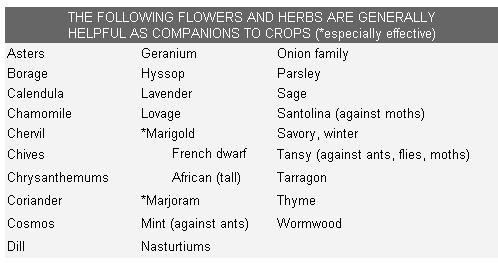
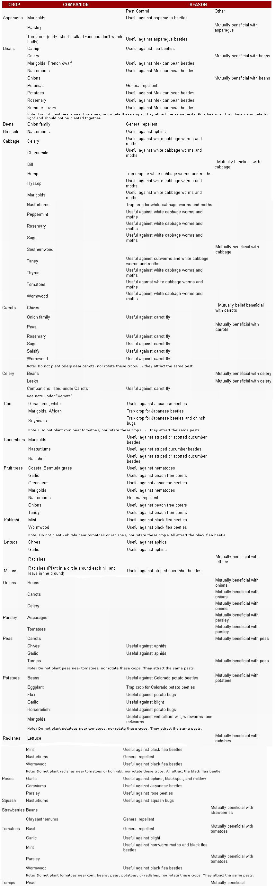

My husband, Ross, and I have been collecting information on companion planting for use in our own garden. During this research, we've found many pointers in various works, but no extensive, easy-to-use listing of each crop's preferences . . . so we'd like to share with you the guide we've drawn up for ourselves.
Our list was compiled while reading and taking notes on Beatrice Trum Hunter's Gardening Without Poisons (second edition 1972, Houghton Mifflin Company, $6.95 hard cover, $1.25 paperback) . . . which we highly recommend for further information. We've also used hints from other sources, including articles in Organic Gardening and Farming magazine, and have been greatly encouraged by The Organic Way to Plant Protection from Rodale Press.
You'll note that many of the companions cited in the list are intended as pest repellents. It's true that healthy plants, growing in fertile, humus-rich soil, are much less attractive to insects than less sturdy specimens. All the same, if you're just beginning to build up your land (as we are), you don't have to stand by helplessly and watch your crops devoured: You can beautify your garden with certain flowers and herbs which tend to ward off intruders. Just be sure to plant the companions early, so they'll be fairly good-sized and maybe even blooming by the time the vegetables sprout. If you're not fighting a particular pest, you can simply choose a few favorites from the "generally helpful" group to scatter in and around your garden plot.
As a rule, it's advisable to separate vegetables that attract the same harmful insects. (We've included some warnings to this effect in the list.) There are cases, though, where it's expedient to lure the pests away from a main crop to feed on a "trap crop" nearby . . . and we've noted a few such examples.
You'll also see that some pairings are recommended as "mutually beneficial" and it's wise to arrange your planting accordingly (by alternating rows of beans and potatoes, for instance, and sprinkling radish seed among the lettuce). Just what makes these relationships work isn't known in some cases . . . but there's no doubt that certain combinations have turned out well for many experienced gardeners, and the fruits of their experiments can help you make your plot a thriving, harmonious community.
|
|
 |
 |